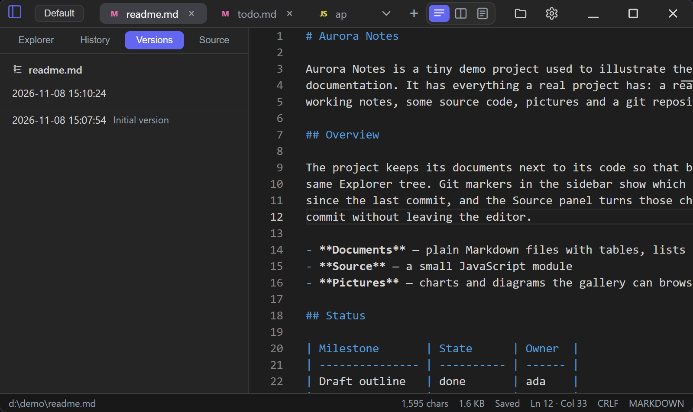

版本记录
按文件保存的私有历史：记录、比对、取回，以及与 git 的区别。

默认关闭。在「设置 → 版本」里打开后，你主动发起的每一次保存（Ctrl+S，或标签右键的「创建版本」）都会
记下文件当时的内容。这里用「版本」而不是「提交」是有意的：它不是你要去分支、去推送的仓库，也不会把
任何东西带到正在编辑的那个文件夹里。
- 记什么。 磁盘上已存在的文件，被手动保存，且规则说「记」。一个文件第一次被记录时会写下两条：它 被打开时磁盘上的那份内容——时间用的是文件自己上次的修改时间，而不是编辑器看到它的时间——以及刚 刚保存的内容。有第一条，才谈得上跟「这文件原本的样子」比对，而不只能跟上一次保存比。
- 不记什么。 自动保存会写文件但不记版本——除非在「设置 → 版本」里打开那条开关，开了之后它的写入
就与其它保存一样记录。默认关，因为打字中间的一次停顿不等于有人答了「这一版要留」，而历史又从不裁剪——把每次停顿都记下来，列表涨得更快，留下的也是没人挑过的节点。加密的文件一律不记，解锁了也
不记——版本就是那段明文，存在应用自己的目录里，紧挨着你特意加密过的文档；草稿之所以用文件密钥密封，
防的就是这个，而版本在写入时没有密钥可密封。超过大小上限的文件照常保存，只是不纳入记录，每个会话提示
一次。图片根本不提供。内容与最新一条相同的保存不新增，所以连按四次
Ctrl+S只会留一条——除非你为它写 了说明，那是唯一让「文本没变的保存」值得留下的东西。 - 两个开关，一条规则。 「设置 → 版本」是所有文件的默认；单个文件可以在标签右键菜单里覆盖它 （「为此文件记录版本」/「停止为此文件记录版本」），也可以在那个文件的设置对话框里改。 「创建版本」不受开关影响，且点它会把那个文件转为强制记录——愿意手动记一版，本身就是对这个文件表了态。 它会先问你一句说明：第一行是列表里显示的那句，下面的想写几行写几行。都可以不填，都会跟版本一起存着， 也都事后改不了——它就存在那条版本记录里面，不是贴在旁边的标签，所以这个问题只在这一次问，之后不再提供 补写的入口。正文会在你打开这条版本比对时显示出来，也在那一行的悬浮提示里。版本记的是文件在磁盘上的样子， 所以标签里还有没保存的内容时，点「创建版本」会先把文本写盘，而你写的说明就挂在这次保存产生的那条记录上， 不会为同一份文本再多留一行。
- 保存前先问一句。 「保存时问我留言」（设置 → 版本，默认关）把同一个框放到你主动发起的保存前面——
Ctrl+S，或标签上那个脏标记——这样说明才是在版本还没有 message 可改之前写下的。留空就是正常答案：照样 保存，只是不带说明。按 Esc 则不保存，这与它在本应用别处的意思一致。存不了版本的保存一概不问：图片、加密 文件、还没命名的新标签、没有东西可写的文件；自动保存也不问——它前面没有人可以答。在这种询问里写了说明， 等同于点「创建版本」时那个表态：把这个文件纳入记录。 - 比对与恢复。 版本视图按新的在前列出当前文件的历史。点一条会打开比对弹层，里面可以是这段历史的 任意两条并排：左右两边各是一个版本，或者当前编辑区的文本；点进来的那条默认在左边。弹层上的控件一律 只用图标，文字在 tooltip 里——下拉下方的工具条是「交换」和「恢复此版本」，标题栏右端是「只看变更」「铺满 窗口」「关闭」；这条栏挤一挤，正文就宽一点，而三种语言的标签会是它最宽的东西。弹层可用标题拖动，可从右边、 下边、右下角调宽高，也可铺满后收回——铺开前的尺寸会记住，关闭后两者都不留，因为比对是一次查看，不是一种 布局。「只看变更」把视图折成一块块变更及其上下几行，下方窄窄一行写明左右各折掉了多少行： 一个藏掉了大半文件却什么都不说的比对，是能被读出错误答案的。恢复只把该版本的文本放回编辑器并标为 未保存，从不写文件；不保存就关掉，磁盘上什么都没变。恢复本身不产生新版本。
- 它不负责清理。 记下的历史不会被裁剪，也没法单独删掉某一条：历史是一条链，从中间抽掉一环就得 重写它之后的全部。「设置 → 版本」里的「每个文件列出多少条」只限制读多少，不限制存多少；要归还磁盘 只有「清空所有版本」，它会要求点两次。如果哪天占用比历史更重要，要关的就是这个开关。
- 存在哪里。
<应用数据>\wrolp\shadow\，每个文件一个目录，命名方式与草稿一致。每个目录都是一个 只有一个分支的 git 仓库，里面装的就是你的文本——隐私级别与草稿目录相同，卸载时一并删除。正在编辑的 目录里不会写入任何东西，也绝不会只因为打开过某个文件就为它建一个仓库。 - 路径就是身份。 在编辑器里改名，历史跟着走：目录搬过去，里面那条记录用的名字保持原样——
这正是「改名跟得上」和「不重写历史」能同时成立的原因。在编辑器外面改名（资源管理器、同步盘、
git mv），新路径什么都找不到，列表就从头开始；旧历史并没有丢，只是不再关联。改到一个已有历史 的名字上时，保留那个名字自己的时间线，另一份原地留下——两条历史不会被合并。 - 备注保持写下它时用的语言。 版本的标题与版本存在一起，所以用中文记录的历史，把界面切成英文后 仍然显示「初始版本」。